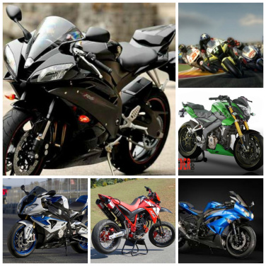

Scooter. Para uso urbano. Tienen motores de 50 hasta 600 cm3, ubicados debajo del asiento del conductor. Incluyen una protección frontal para las piernas y un cuerpo que oculta parte de la mecánica. Se destacan: Yamaha BWS, Kymco, Honda Elite, Vespa, entre otras.
Calle. Son exclusivamente para transporte en la ciudad y para trabajo. Tienen diseños sin carenado (carrocería), son livianas y equipan motores de baja cilindrada (100 cm3 a 250 cm3). Entre las más populares: Pulsar, Boxer, AKT, Yamaha y Suzuki GS-125.
Naked. Para usar principalmente en la ciudad, aunque también en carretera. Su diseño no tiene carenado, su mecánica es muy visible y los motores son de medio o alto cilindraje (300 cm3 o más). En este grupo se encuentran la Suzuki SV y BMW F800 R, entre otras.
Rutera. Ideales para realizar viajes largos, con motores de media y gran cilindrada. En su mayoría vienen con maletas a sus costados y se dividen en tres sub-segmentos: Turismo, como las BMW R 1200 GT y Honda Goldwing; Turismo deportiva (combina diseño deportivo y turismo), como las Yamaha TDM y Kawasaki ER6F; y Trail (turismo y todoterreno), como la Suzuki V-Strom y Kawasaki Versys.
Custom. Pensada para viajes y la ciudad. Se destaca por su diseño, sus cromados y un estilo clásico y retro. Cada propietario suele modificarlas según sus gustos y se caracterizan por el sonido de su motor, como las Harley Davidson, marca que tiene patentado el sonido de sus modelos. Se destaca también la Suzuki GZ..
Deportivas junior. Son aquellas con diseño deportivo pero para uso urbano. En su mayoría tienen carenado (carrocería) y alcanzan velocidades cercanas a los 170km/h. Se destacan la Kawasaki Ninja 250R y Yamaha R15.
Deportivas. Pensadas para la pista y adaptadas para usar en la calle. En su mayoría tienen carenado que mejora su aerodinámica y alcanzan velocidades por encima de los 250 km/h. Aquí encontramos la BMW S 1000 RR y R 1200 RS; Suzuki Hayabusa y GSXR; Yamaha R1 y FZR; Honda CBR; Kawasaki Ninja 300 y ZX, entre otras.
